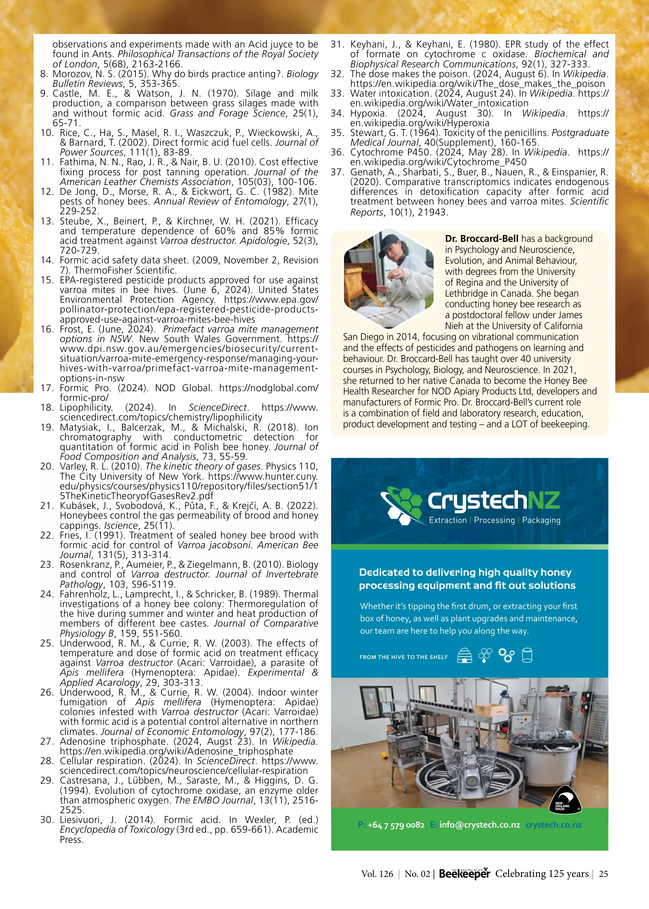

Dr. Broccard-Bell has a background
in Psychology and Neuroscience,
Evolution, and Animal Behaviour,
with degrees from the University
of Regina and the University of
Lethbridge in Canada. She began
conducting honey bee research as
a postdoctoral fellow under James
Nieh at the University of California
San Diego in 2014, focusing on vibrational communication
and the effects of pesticides and pathogens on learning and
behaviour. Dr. Broccard-Bell has taught over 40 university
courses in Psychology, Biology, and Neuroscience. In 2021,
she returned to her native Canada to become the Honey Bee
Health Researcher for NOD Apiary Products Ltd, developers and
manufacturers of Formic Pro. Dr. Broccard-Bell’s current role
is a combination of field and laboratory research, education,
product development and testing – and a LOT of beekeeping.
observations and experiments made with an Acid juyce to be
found in Ants. Philosophical Transactions of the Royal Society
of London, 5(68), 2163-2166.
8. Morozov, N. S. (2015). Why do birds practice anting?. Biology
Bulletin Reviews, 5, 353-365.
9. Castle, M. E., & Watson, J. N. (1970). Silage and milk
production, a comparison between grass silages made with
and without formic acid. Grass and Forage Science, 25(1),
65-71.
10. Rice, C., Ha, S., Masel, R. I., Waszczuk, P., Wieckowski, A.,
& Barnard, T. (2002). Direct formic acid fuel cells. Journal of
Power Sources, 111(1), 83-89.
11. Fathima, N. N., Rao, J. R., & Nair, B. U. (2010). Cost effective
fixing process for post tanning operation. Journal of the
American Leather Chemists Association, 105(03), 100-106.
12. De Jong, D., Morse, R. A., & Eickwort, G. C. (1982). Mite
pests of honey bees. Annual Review of Entomology, 27(1),
229-252.
13. Steube, X., Beinert, P., & Kirchner, W. H. (2021). Efficacy
and temperature dependence of 60% and 85% formic
acid treatment against Varroa destructor. Apidologie, 52(3),
720-729.
14. Formic acid safety data sheet. (2009, November 2, Revision
7). ThermoFisher Scientific.
15. EPA-registered pesticide products approved for use against
varroa mites in bee hives. (June 6, 2024). United States
Environmental Protection Agency. https://www.epa.gov/
pollinator-protection/epa-registered-pesticide-products-
approved-use-against-varroa-mites-bee-hives
16. Frost, E. (June, 2024). Primefact varroa mite management
options in NSW. New South Wales Government. https://
www.dpi.nsw.gov.au/emergencies/biosecurity/current-
situation/varroa-mite-emergency-response/managing-your-
hives-with-varroa/primefact-varroa-mite-management-
options-in-nsw
17. Formic Pro. (2024). NOD Global. https://nodglobal.com/
formic-pro/
18. Lipophilicity.
(2024).
In
ScienceDirect.
https://www.
sciencedirect.com/topics/chemistry/lipophilicity
19. Matysiak, I., Balcerzak, M., & Michalski, R. (2018). Ion
chromatography
with
conductometric
detection
for
quantitation of formic acid in Polish bee honey. Journal of
Food Composition and Analysis, 73, 55-59.
20. Varley, R. L. (2010). The kinetic theory of gases. Physics 110,
The City University of New York. https://www.hunter.cuny.
edu/physics/courses/physics110/repository/files/section51/1
5TheKineticTheoryofGasesRev2.pdf
21. Kubásek, J., Svobodová, K., Pùta, F., & Krejèí, A. B. (2022).
Honeybees control the gas permeability of brood and honey
cappings. Iscience, 25(11).
22. Fries, I. (1991). Treatment of sealed honey bee brood with
formic acid for control of Varroa jacobsoni. American Bee
Journal, 131(5), 313-314.
23. Rosenkranz, P., Aumeier, P., & Ziegelmann, B. (2010). Biology
and control of Varroa destructor. Journal of Invertebrate
Pathology, 103, S96-S119.
24. Fahrenholz, L., Lamprecht, I., & Schricker, B. (1989). Thermal
investigations of a honey bee colony: Thermoregulation of
the hive during summer and winter and heat production of
members of different bee castes. Journal of Comparative
Physiology B, 159, 551-560.
25. Underwood, R. M., & Currie, R. W. (2003). The effects of
temperature and dose of formic acid on treatment efficacy
against Varroa destructor (Acari: Varroidae), a parasite of
Apis mellifera (Hymenoptera: Apidae). Experimental &
Applied Acarology, 29, 303-313.
26. Underwood, R. M., & Currie, R. W. (2004). Indoor winter
fumigation of Apis mellifera (Hymenoptera: Apidae)
colonies infested with Varroa destructor (Acari: Varroidae)
with formic acid is a potential control alternative in northern
climates. Journal of Economic Entomology, 97(2), 177-186.
27. Adenosine triphosphate. (2024, Augst 23). In Wikipedia.
https://en.wikipedia.org/wiki/Adenosine_triphosphate
28. Cellular respiration. (2024). In ScienceDirect. https://www.
sciencedirect.com/topics/neuroscience/cellular-respiration
29. Castresana, J., Lübben, M., Saraste, M., & Higgins, D. G.
(1994). Evolution of cytochrome oxidase, an enzyme older
than atmospheric oxygen. The EMBO Journal, 13(11), 2516-
2525.
30. Liesivuori, J. (2014). Formic acid. In Wexler, P. (ed.)
Encyclopedia of Toxicology (3rd ed., pp. 659-661). Academic
Press.
31. Keyhani, J., & Keyhani, E. (1980). EPR study of the effect
of formate on cytochrome c oxidase. Biochemical and
Biophysical Research Communications, 92(1), 327-333.
32. The dose makes the poison. (2024, August 6). In Wikipedia.
https://en.wikipedia.org/wiki/The_dose_makes_the_poison
33. Water intoxication. (2024, August 24). In Wikipedia. https://
en.wikipedia.org/wiki/Water_intoxication
34. Hypoxia. (2024, August 30). In Wikipedia. https://
en.wikipedia.org/wiki/Hyperoxia
35. Stewart, G. T. (1964). Toxicity of the penicillins. Postgraduate
Medical Journal, 40(Supplement), 160-165.
36. Cytochrome P450. (2024, May 28). In Wikipedia. https://
en.wikipedia.org/wiki/Cytochrome_P450
37. Genath, A., Sharbati, S., Buer, B., Nauen, R., & Einspanier, R.
(2020). Comparative transcriptomics indicates endogenous
differences in detoxification capacity after formic acid
treatment between honey bees and varroa mites. Scientific
Reports, 10(1), 21943.
Vol. 126 | No. 02 |
Celebrating 125 years | 25